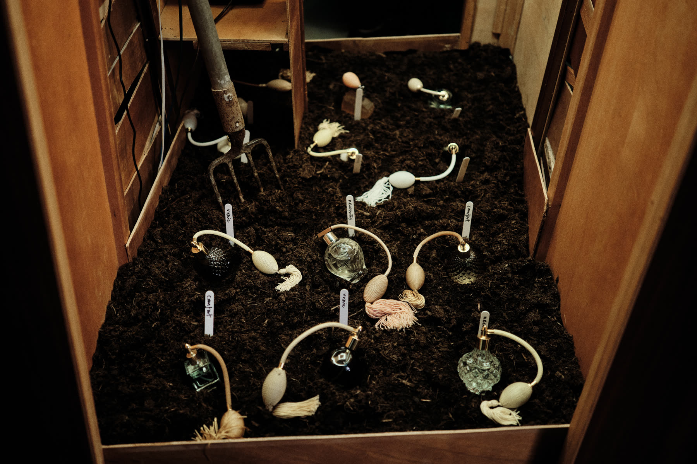
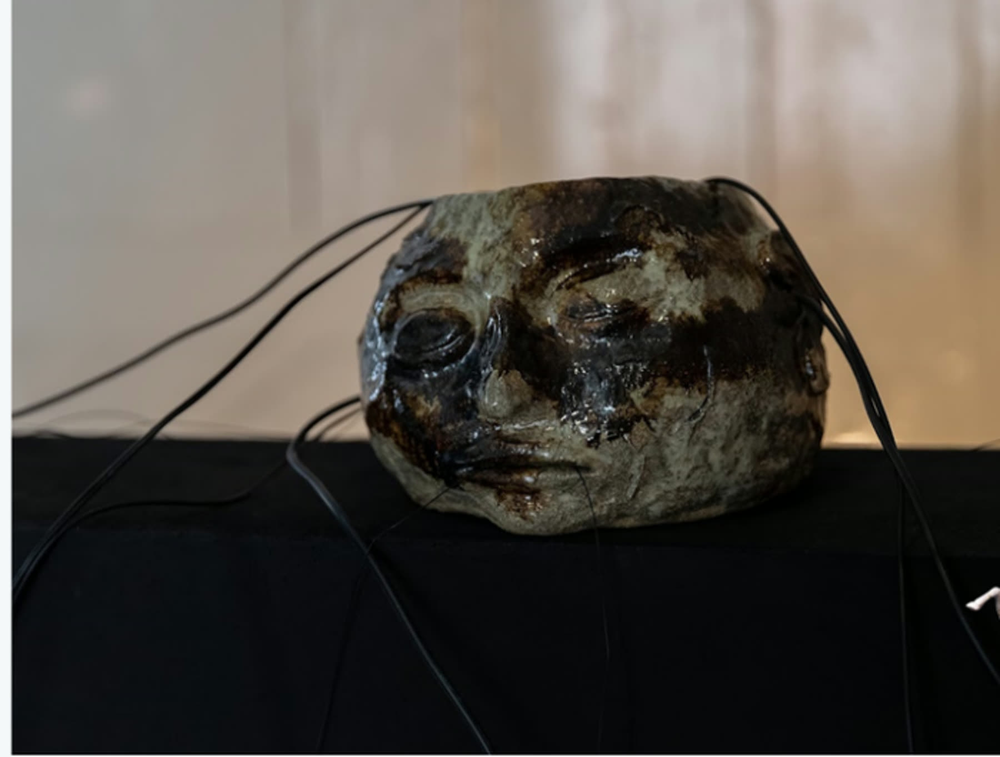
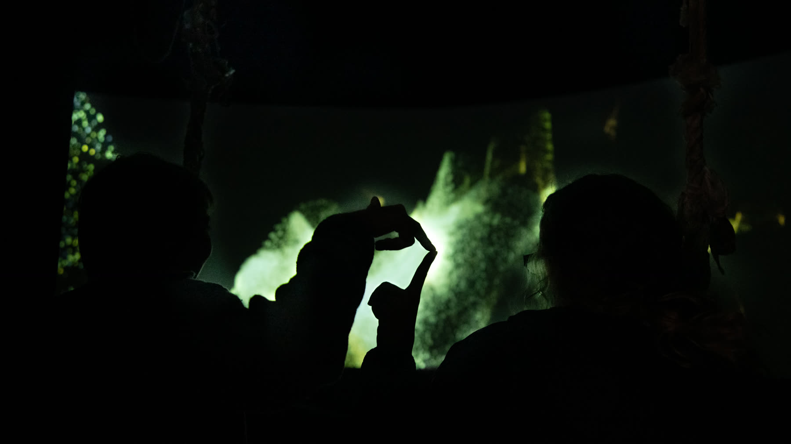
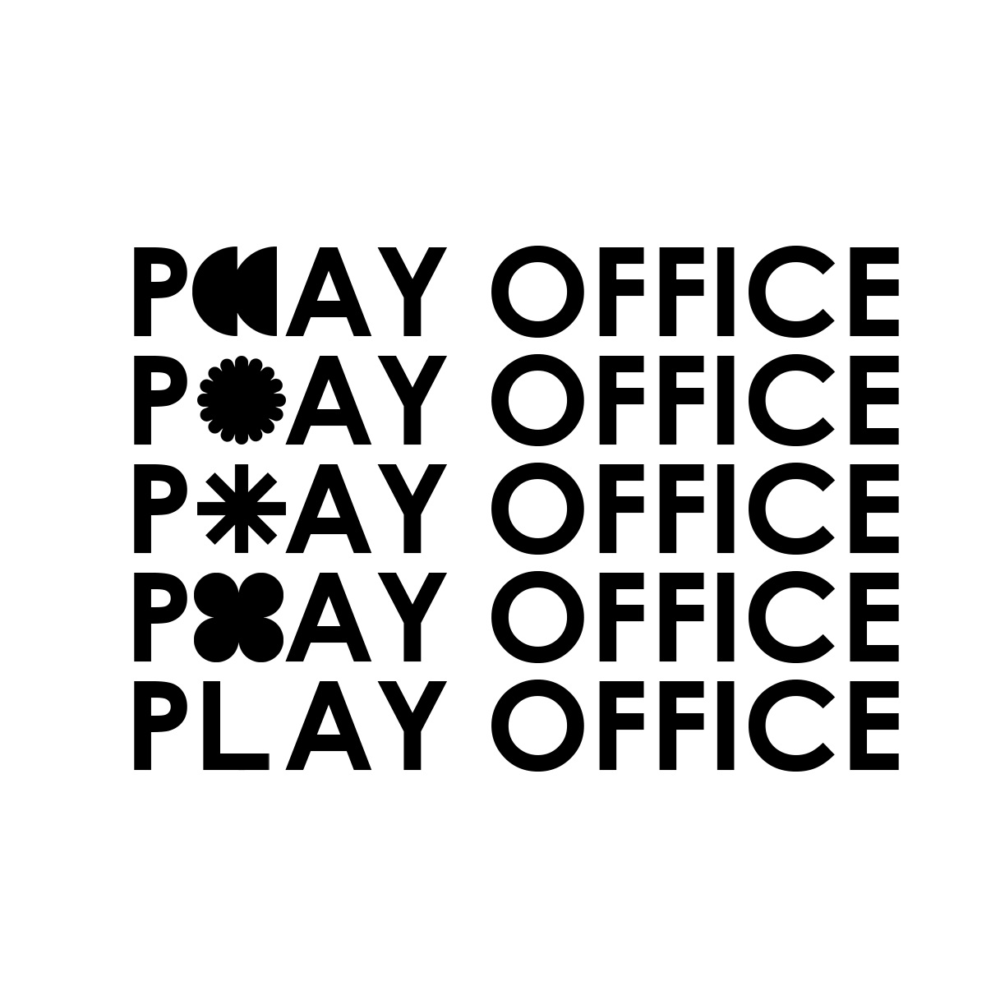

About Memory Library
Memory Library is an exploratory programme asking how we remember, how those memories become heritage, and how technology might help us relate differently to the past and to one another.
Developed through nearly a decade of artistic practice, consultation and experimentation, Memory Library brings together artists, communities, heritage and lived experience.
At its centre is the idea of a different kind of archive. One built not only from objects, documents and significant events, but from experiences: stories, sensations, places, relationships and the things people remember.
The aim is connection, not curation.
Memory Library asks how we might use art and emerging technology to create encounters with heritage that feel personal, embodied and relational, while repositioning humanity and empathy at the forefront of how new technologies are made and experienced.
A different kind of archive
Heritage is often organised around what has been preserved.
Buildings. Collections. Artefacts. Photographs. Documents. Significant historical events.
Memory Library is interested in what exists around and between those things - and how heritage can emerge from communities and artists, not institutions.
What does our connection to a place look like when we explore the way it smelt, rather than when it was built? What new meanings and ownerships happen when we prioritise the living heritage of spaces? Memory Library raises "personhood" as an equal co-author to academia in defining our histories.
Rather than simply preserving the past, Memory Library is interested in how we participate in it.

Recollect by Thomas Buckley and Kate Phillips, commissioned by ArtHouse Jersey

In Touch In Ruin by Harry Payne
Memory is embodied
Some parts of a memory are easy to archive. Others are much harder.
Memory can exist through sound, touch, movement, smell, taste, atmosphere and our relationship to a particular place or person.
These sensory and emotional details are often absent from conventional archives, but they can be the things that stay with us most strongly.
Memory Library explores ways of gathering and communicating these embodied histories.
A memory might begin as a conversation, recording, photograph, drawing, movement, object or sensory description. Artists can then work with those fragments to create new encounters with the past.
Technology with people at its centre
In a city that holds its past as closely as Portsmouth does, it is vital that artists have space to ask what that past tells us about who we can be now.
By exploring technologies that can still feel almost like science fiction, we can open up new ways of encountering heritage. Not simply preserving or reconstructing the past, but reinterpreting it, questioning it and allowing it to become something active.
The histories that shape a place can easily become fixed ideas about who belongs, what matters and how a city understands itself. Memory Library is interested in making those ideas more porous and more gentle.
By decentralising our interpretation of the past, we can form new connections to heritage and to one another. Technology becomes a tool for empathy: a way of drawing lines between different experiences, memories and people.

In Touch In Ruin by James Wylie
A place for artists to experiment
Memory Library is also a space for artistic development and experimentation.
Through Play Office, artists are supported to investigate emerging technologies, heritage and new forms of immersive practice.
Artists can access equipment, workshops, mentoring, studio space and opportunities to experiment with technologies that can otherwise be expensive or difficult to access.
The aim isn't simply to teach artists how to use technology.
It is to give them the time, tools and freedom to work out why they might use it at all.
Artists are encouraged to begin with the story, community, memory or question they want to explore and allow the technology to follow.

Play Office artist development session
Thomas Buckley
Thomas Buckley is an artist and creative technologist working across AR, VR, projection, theatre, sensory practice and immersive media.
Since 2016, his work has explored how placemaking, installation and emerging technology can be used to reveal our humanity and create new relationships with memory and heritage.
His wider practice asks how technology can create kinship rather than distance, and how the tools shaping contemporary life might be made useful, accessible and beneficial to more people.
Memory Library 2026
In November 2026, Memory Library takes the form of a public pop-up programme at Boathouse 5 in Portsmouth Historic Quarter.
For ten days, the building becomes part gallery, part workshop, part cinema, part meeting place and part experimental archive. This is an exploration of what a new type of third space might be for Portsmouth.
Some visitors might arrive to see an artwork. Others might learn a new technology, contribute a memory, attend a workshop or sit down and talk with somebody they have never met.
Together, those encounters become the library.
Boathouse 5, Portsmouth Historic Dockyard
13–21 Nov 2026
10-day public pop-up
Play Office
Memory Library connects Portsmouth with artists and organisations working across Bangladesh, Cairo, Lebanon and Malta.
Portsmouth is both an island and a port city, it's designed to import and export - by welcoming people into the city, we exchange our oldest technology: culture. The programme is designed to remind us that when we share, connect and relate, we are strengthened.
The aim is to create relationships between places, allowing different approaches to memory, heritage, technology and community practice to sit alongside one another.
Audience & access
Memory Library is for a broad public - residents, families, young people, artists and people who may not usually engage with digital art. It aims to make emerging technology tactile, social and accessible.
This website targets WCAG 2.2 AA. If you need information in a different format, or have an access question about visiting Boathouse 5, contact the Memory Library team via Play Office.

Have a memory, object or photograph connected to Portsmouth?
Memory Library is built from contributions from the public - a photograph, a recording, an object, a story. We'd like to hear from you.